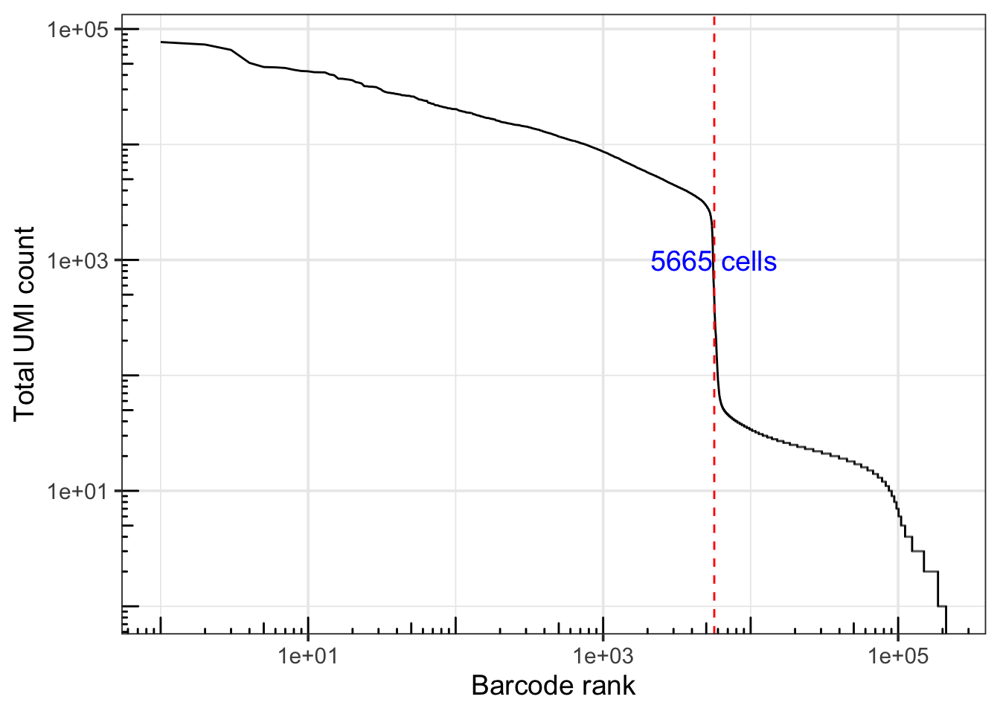

Chapter 2 Quality Control
2.1 Before you filter: think about what you’re throwing away
I’ve seen people lose entire cell populations because they applied QC thresholds without thinking. So before we get into the code, let me share how I think about quality control.
The temptation is to be strict. Remove anything that looks questionable. But here’s the problem: a cell with low gene counts might be a dying cell, or it might be a perfectly healthy naive T cell that just doesn’t express many genes. How do you tell the difference?
You look at multiple metrics together. Not just gene counts. Not just UMI counts. You look at UMI counts, number of detected genes, mitochondrial percentage, and ribosomal percentage – jointly. A quiescent cell will have low UMI counts but normal mitochondrial percentage. A dying cell will have low UMI counts and high mitochondrial percentage, because the cytoplasmic RNA leaks out while mitochondrial RNA stays trapped.
Be permissive during quality control to preserve rare cell subpopulations. Never filter on a single metric in isolation. – sc-best-practices.org
2.1.1 What counts as “normal” depends on your biology
This is something people don’t think about enough. Naive T cells have low transcriptional activity, so low UMI counts are expected. Plasma B cells are antibody factories with extremely high ribosomal content. Activated T cells are metabolically active and will have higher UMI counts than resting cells. Red blood cell precursors naturally have high mitochondrial content.
If you blindly filter “cells with <500 genes detected,” you might wipe out your naive T cells. If you filter “cells with >20% mitochondrial reads,” you might lose erythroid lineages. I’ve seen this happen in real datasets.
2.1.2 Fixed thresholds vs adaptive thresholds
There are two ways to set QC cutoffs. Fixed thresholds are simple and interpretable – “keep cells with 200-5000 genes detected.” They work fine when you know your data well. But they don’t adapt to biological heterogeneity.
Adaptive thresholds use median absolute deviation (MAD) to set data-driven cutoffs. The idea is: flag cells that are more than N MADs from the median for each QC metric. This automatically adjusts to your data’s distribution. We’ll demonstrate both approaches in this chapter.
2.1.3 The knee plot
Before applying any cutoffs, we visualize the data with a knee plot – a ranked plot of UMI counts per barcode. It shows you where real cells (high counts) transition to empty droplets (background). A sharp knee means clear separation; a gradual knee means you’ll need more sophisticated methods like emptyDrops().
2.1.4 The empty droplet problem
During 10x encapsulation, not every droplet captures a cell. Empty droplets still have some counts from ambient RNA floating in solution (from cells that lysed during sample prep). So you need to distinguish real cells from empty droplets from damaged cells.
You could just set a fixed UMI threshold – “anything above 1000 UMIs is a cell.” But that’s arbitrary and tissue-dependent. A better approach is DropletUtils::emptyDrops(), which statistically tests whether each barcode’s expression profile differs from the ambient RNA pool. This preserves small cells while removing background.
2.1.5 QC is iterative
One thing I want to emphasize: QC is not a one-and-done step. You do initial filtering, cluster the data, look at QC metrics per cluster, and then go back and re-evaluate. If you see a cluster where 80% of cells have high mitochondrial content, that’s probably dying cells – remove them and re-cluster.
2.2 A note on preparing the computing environment
Let’s be honest: one of the hardest parts of single-cell analysis is not the biology or the statistics – it’s getting the software installed in the first place.
I want you to read this blog post by Aron Gyenge: How difficult is it to start your single-cell analysis as a beginner?. He tried installing Seurat and the OSCA packages on a fresh Ubuntu machine and documented every failure along the way. The installation log was over 13,000 lines long. That’s not a typo.
The problem is that R packages like Seurat depend on compiled C/C++/Fortran code, which in turn depends on system libraries that your operating system may not have. When these are missing, you get cryptic error messages buried in thousands of lines of output. You’ll see things like “dependency ‘xyz’ is not available” or a compilation error that makes no sense until you realize you’re missing libhdf5-dev or libharfbuzz-dev on your system.
Here’s what I recommend:
If you’re on macOS, install Homebrew first, then install the common system dependencies:
If you’re on Ubuntu/Debian, install these before you even open R:
sudo apt-get install -y \
libxml2-dev libssl-dev libcurl4-openssl-dev \
libfontconfig1-dev libfreetype6-dev libpng-dev \
libtiff5-dev libjpeg-dev libharfbuzz-dev \
libfribidi-dev libgit2-dev libhdf5-dev \
make gfortran liblzma-dev libbz2-devInstall these before running renv::restore() or BiocManager::install(). It will save you a lot of frustration.
If you’re on a shared cluster or HPC, talk to your system admin. They’ve probably dealt with this before and may already have modules set up for you (module load R/4.3 etc.).
The good news is that this course uses renv, which locks all package versions. Once you get renv::restore() to succeed, you’re done – everything is reproducible from there. The bad news is that first renv::restore() can take 30-60 minutes and might fail a few times before you get all the system dependencies sorted out. Be patient. It’s a one-time cost.
2.3 A note on project folder structure
Before we start writing any analysis code, let me talk about something that will save you (and your collaborators) a lot of headaches: project organization and file paths.
2.3.1 Stop using setwd() and rm(list = ls())
I see this at the top of so many R scripts:
Both of these are bad habits. Let me explain why.
setwd() hardcodes an absolute path that only works on your machine. As Jenny Bryan put it in her famous blog post Project-oriented workflow: “The chance of the setwd() command having the desired effect…for anyone besides its author is 0%.” When a collaborator (or future you on a different computer) tries to run your script, it breaks immediately.
rm(list = ls()) seems like it gives you a clean slate, but it doesn’t. It clears user objects from your environment, but it does not unload packages, reset changed options, or restart R. You end up with hidden dependencies on things you ran earlier in the session. The real solution is to restart R frequently (Cmd/Ctrl + Shift + F10 in RStudio).
The deeper issue is the distinction between workflow and product. Your workflow is personal – which editor you use, where your home directory is, your screen layout. Your product – the R scripts, the data, the results – should be portable and self-contained. Don’t bake your personal workflow into your product.
2.3.2 Use RStudio Projects and here()
The fix is simple: organize each analysis as a self-contained project folder, and use the here package to build file paths.
Our project folder looks like this:
practical_scRNAseq_analysis_with_R/
├── index.Rmd
├── 01-data-download-quantification.Rmd
├── 02-quality-control.Rmd
├── 03-seurat-workflow-explained.Rmd
├── 04-cell-annotation.Rmd
├── 05-gene-set-enrichment.Rmd
├── data/ # raw and processed data
│ ├── SRX5329394_quant/
│ ├── SRX5329395_quant/
│ ├── SRX5329396_quant/
│ ├── SRX5329397_quant/
│ └── pbmc_seurat_obj.rds
├── results/ # analysis outputs
│ └── QC/
├── scripts/ # helper scripts
│ └── download_data.R
├── images/ # figures for the book
├── bookdown-demo.Rproj # RStudio project file
└── DESCRIPTIONThe .Rproj file marks the root of the project. When you open this file in RStudio, it automatically sets your working directory to the project root. No setwd() needed.
The here() function builds file paths relative to the project root, no matter where your current script lives:
library(here)
# this always works, on any machine, from any script
here("data/SRX5329394_quant")
#> [1] "/Users/tommy/githup_repo/practical_scRNAseq_analysis_with_R/data/SRX5329394_quant"
# compare to the fragile alternative:
"/Users/tommy/Desktop/my_project/data/SRX5329394_quant" # breaks on every other machinehere() figures out the project root by looking for markers like .Rproj, .git, or .here files. It works the same way on Mac, Windows, and Linux. Throughout this book, you will see here() used everywhere for file paths. Get in the habit of using it – your future self and your collaborators will thank you.
For more on this topic, I highly recommend reading Jenny Bryan’s blog post: https://www.tidyverse.org/blog/2017/12/workflow-vs-script/
2.3.3 Download the data
If you skipped Chapter 1 or didn’t have the compute resources to run simpleaf yourself, that’s fine. You can download the pre-computed quantification output and pick up from here.
Download the simpleaf output from: https://osf.io/r7cmk/
After downloading, place the files in the data/ folder at the root of your project so the directory structure looks like this:
practical_scRNAseq_analysis_with_R/
└── data/
├── SRX5329394_quant/
│ └── af_quant/
├── SRX5329395_quant/
│ └── af_quant/
├── SRX5329396_quant/
│ └── af_quant/
├── SRX5329397_quant/
│ └── af_quant/
└── genes.gtfEach _quant folder contains the simpleaf output for one sample, and af_quant inside it has the actual count matrix files. The genes.gtf file is used later for mapping ENSEMBL IDs to gene symbols.
Make sure the folder names match exactly – the code in this chapter uses list.files(here("data/"), pattern = "quant") to find them automatically. If the names don’t match, nothing will be found.
You can verify everything is in the right place by running:
library(here)
list.files(here("data/"), pattern = "quant")
#> [1] "SRX5329394_quant" "SRX5329395_quant" "SRX5329396_quant" "SRX5329397_quant"If you see four folders listed, you’re good to go.
2.4 Quality Control
Now that we have the final count matrix, it is pivotal to do some quality control first.
If you have used cellranger it gives you a nice html report on the number of genes detected per cell and mean number of reads per cell. see https://www.10xgenomics.com/analysis-guides/quality-assessment-using-the-cell-ranger-web-summary
we will use alevinQC
I asked a question on it a few years ago. https://github.com/csoneson/alevinQC/issues/31
You will need R version > 4.3.
install.packages("here")
if (!require("BiocManager", quietly = TRUE))
install.packages("BiocManager")
BiocManager::install("alevinQC")
#install.packages("tictoc")
library(alevinQC)
library(here)
library(tictoc)
dir.create(here("results/QC"), recursive = TRUE)
tic()
simpleafQCReport(here("data/SRX5329394_quant"),
sampleId = "SRX5329394",
outputFile = here("results/QC/SRX5329394.html"),
outputFormat = "html_document",
outputDir = here("results/QC"))
toc()It should take you less than 1 min to finish the QC by alevinQC.
Now, run it for all four samples.
all_quant_folders<- list.files(here("data/"), pattern = "quant")
all_quant_folders
samples<- stringr::str_replace(all_quant_folders, "_quant", "")
samples
for (quant in all_quant_folders){
sample<- stringr::str_replace(quant, "_quant", "")
simpleafQCReport(here(paste0("data/", quant)),
sampleId = sample,
outputFile = here(paste0("results/QC/", sample,".html")),
outputFormat = "html_document",
outputDir = here("results/QC"),
forceOverwrite = TRUE)
}2.4.1 Remove empty droplets
When we ran simpleaf, we specified no filtering (--unfiltered-pl), so the count matrix contains all barcodes – real cells and empty droplets alike. This is intentional. We want to apply statistical methods for cell calling rather than relying on arbitrary thresholds.
Let’s load the data and see what we’re working with.
# BiocManager::install("SingleCellExperiment")
library(SingleCellExperiment)
library(Seurat)
library(here)
library(dplyr)
library(ggplot2)
library(stringr)
# BiocManager::install("fishpond")
# load count matrix
sce <- fishpond::loadFry(here("data/SRX5329394_quant/af_quant"))loadFry read in the count matrix as a single-cell experiment object.
Read https://bioconductor.org/books/3.18/OSCA.intro/the-singlecellexperiment-class.html
to understand the object. We will use it in
Let’s get the counts.
#> 5 x 5 sparse Matrix of class "dgCMatrix"
#> TCAGCTCGTATTACCG GTACTTTAGTGTCTCA CTGATAGTCATGCATG
#> ENSG00000243485 . . .
#> ENSG00000186092 . . .
#> ENSG00000241599 . . .
#> ENSG00000237491 . . .
#> ENSG00000228794 . . .
#> TGAGAGGCATCACGAT AACCATGCATGGTCAT
#> ENSG00000243485 . .
#> ENSG00000186092 . .
#> ENSG00000241599 . .
#> ENSG00000237491 . .
#> ENSG00000228794 . .raw_mtx is a sparse matrix, and . means 0.
filter the empty droplets using DropletUtils bioconductor package.
set.seed(123)
#BiocManager::install("DropletUtils")
library(DropletUtils, quietly=T)
out <- emptyDrops(raw_mtx) # get probability that each barcode is a cell
keep <- out$FDR <= 0.05 # define threshold probability for calling a cell
keep[is.na(keep)] <- FALSE
filt_mtx <- raw_mtx[,keep] # subset raw mtx to remove empty drops
dim(filt_mtx)#> [1] 36601 5665after filtering, only 5665 cells left.
Let’s calculate the total number of reads per cell/column.
tot_counts <- colSums(raw_mtx)
df <- tibble(total = tot_counts,
rank = row_number(dplyr::desc(total))) %>%
distinct() %>%
arrange(rank)
head(df)#> # A tibble: 6 × 2
#> total rank
#> <dbl> <int>
#> 1 77111 1
#> 2 73376 2
#> 3 65913 3
#> 4 50896 4
#> 5 46850 5
#> 6 46551 62.4.2 The knee plot
The knee plot is one of the first things I look at for any scRNA-seq dataset. It’s a ranked plot of UMI counts per barcode (both axes on log scale), and it tells you a lot about your data quality.
You see the pattern: real cells sit on a high plateau on the left (thousands of mRNA molecules). Then there’s a sharp drop – the “knee” – and below that, empty droplets with just ambient RNA (10-100x less than real cells). A sharp knee means clean separation between cells and background. A gradual, mushy knee means trouble.
Let’s make one:
ggplot(df, aes(rank, total)) +
geom_path() +
scale_x_log10() +
scale_y_log10() +
annotation_logticks() +
labs(x = "Barcode rank", y = "Total UMI count") +
geom_vline(xintercept = 5666, linetype = 2, color = "red") +
annotate("text", x=5665, y=1000, label="5665 cells", angle= 0, size= 5, color="blue")+
theme_bw(base_size = 14)
The red vertical line marks the 5,665 barcodes that emptyDrops() identified as cells. See how it captures the plateau and excludes the background? The knee is reasonably sharp here, which is a good sign.
You could just say “keep all barcodes with >1,000 UMIs” and call it a day. But that’s arbitrary. A dataset with small cells (like naive T cells) might have real cells below 1,000 UMIs, and you’d lose them. The emptyDrops() approach adapts to your data.
2.4.3 convert the ENSEMBL ID to gene symbol
The rownames of the count matrix are ENSEMBL IDs, we want to convert them to symbols.
Of course, we can use functions such as clusterprofiler::bitr(). In this
example, let’s use the gtf file to map the ENSEMBL ID to gene symbols.
#> # A tibble: 6 × 2
#> name gene_id
#> <int> <chr>
#> 1 1 ENSG00000243485
#> 2 2 ENSG00000186092
#> 3 3 ENSG00000241599
#> 4 4 ENSG00000237491
#> 5 5 ENSG00000228794
#> 6 6 ENSG00000187634# let's use the same gtf file when we build the simpleaf index
# rtracklayer import function to read in the gtf file
gtf <- rtracklayer::import(here("data/genes.gtf"))
gtf#> GRanges object with 2765969 ranges and 24 metadata columns:
#> seqnames ranges strand | source type score
#> <Rle> <IRanges> <Rle> | <factor> <factor> <numeric>
#> [1] chr1 29554-31109 + | HAVANA gene NA
#> [2] chr1 29554-31097 + | HAVANA transcript NA
#> [3] chr1 29554-30039 + | HAVANA exon NA
#> [4] chr1 30564-30667 + | HAVANA exon NA
#> [5] chr1 30976-31097 + | HAVANA exon NA
#> ... ... ... ... . ... ... ...
#> [2765965] KI270734.1 138483-138667 - | ENSEMBL CDS NA
#> [2765966] KI270734.1 138480-138482 - | ENSEMBL stop_codon NA
#> [2765967] KI270734.1 161689-161852 - | ENSEMBL UTR NA
#> [2765968] KI270734.1 161587-161626 - | ENSEMBL UTR NA
#> [2765969] KI270734.1 138082-138482 - | ENSEMBL UTR NA
#> phase gene_id gene_version gene_type gene_name
#> <integer> <character> <character> <character> <character>
#> [1] <NA> ENSG00000243485 5 lncRNA MIR1302-2HG
#> [2] <NA> ENSG00000243485 5 lncRNA MIR1302-2HG
#> [3] <NA> ENSG00000243485 5 lncRNA MIR1302-2HG
#> [4] <NA> ENSG00000243485 5 lncRNA MIR1302-2HG
#> [5] <NA> ENSG00000243485 5 lncRNA MIR1302-2HG
#> ... ... ... ... ... ...
#> [2765965] 2 ENSG00000277196 4 protein_coding AC007325.2
#> [2765966] 0 ENSG00000277196 4 protein_coding AC007325.2
#> [2765967] <NA> ENSG00000277196 4 protein_coding AC007325.2
#> [2765968] <NA> ENSG00000277196 4 protein_coding AC007325.2
#> [2765969] <NA> ENSG00000277196 4 protein_coding AC007325.2
#> level hgnc_id tag havana_gene
#> <character> <character> <character> <character>
#> [1] 2 HGNC:52482 ncRNA_host OTTHUMG00000000959.2
#> [2] 2 HGNC:52482 basic OTTHUMG00000000959.2
#> [3] 2 HGNC:52482 basic OTTHUMG00000000959.2
#> [4] 2 HGNC:52482 basic OTTHUMG00000000959.2
#> [5] 2 HGNC:52482 basic OTTHUMG00000000959.2
#> ... ... ... ... ...
#> [2765965] 3 <NA> basic <NA>
#> [2765966] 3 <NA> basic <NA>
#> [2765967] 3 <NA> basic <NA>
#> [2765968] 3 <NA> basic <NA>
#> [2765969] 3 <NA> basic <NA>
#> transcript_id transcript_version transcript_type transcript_name
#> <character> <character> <character> <character>
#> [1] <NA> <NA> <NA> <NA>
#> [2] ENST00000473358 1 lncRNA MIR1302-2HG-202
#> [3] ENST00000473358 1 lncRNA MIR1302-2HG-202
#> [4] ENST00000473358 1 lncRNA MIR1302-2HG-202
#> [5] ENST00000473358 1 lncRNA MIR1302-2HG-202
#> ... ... ... ... ...
#> [2765965] ENST00000621424 4 protein_coding AC007325.2-201
#> [2765966] ENST00000621424 4 protein_coding AC007325.2-201
#> [2765967] ENST00000621424 4 protein_coding AC007325.2-201
#> [2765968] ENST00000621424 4 protein_coding AC007325.2-201
#> [2765969] ENST00000621424 4 protein_coding AC007325.2-201
#> transcript_support_level havana_transcript exon_number
#> <character> <character> <character>
#> [1] <NA> <NA> <NA>
#> [2] 5 OTTHUMT00000002840.1 <NA>
#> [3] 5 OTTHUMT00000002840.1 1
#> [4] 5 OTTHUMT00000002840.1 2
#> [5] 5 OTTHUMT00000002840.1 3
#> ... ... ... ...
#> [2765965] 1 <NA> 15
#> [2765966] 1 <NA> 15
#> [2765967] 1 <NA> 1
#> [2765968] 1 <NA> 2
#> [2765969] 1 <NA> 15
#> exon_id exon_version protein_id ccdsid
#> <character> <character> <character> <character>
#> [1] <NA> <NA> <NA> <NA>
#> [2] <NA> <NA> <NA> <NA>
#> [3] ENSE00001947070 1 <NA> <NA>
#> [4] ENSE00001922571 1 <NA> <NA>
#> [5] ENSE00001827679 1 <NA> <NA>
#> ... ... ... ... ...
#> [2765965] ENSE00003753010 1 ENSP00000481127.1 <NA>
#> [2765966] ENSE00003753010 1 ENSP00000481127.1 <NA>
#> [2765967] ENSE00003746084 1 ENSP00000481127.1 <NA>
#> [2765968] ENSE00003719550 1 ENSP00000481127.1 <NA>
#> [2765969] ENSE00003753010 1 ENSP00000481127.1 <NA>
#> ont
#> <character>
#> [1] <NA>
#> [2] <NA>
#> [3] <NA>
#> [4] <NA>
#> [5] <NA>
#> ... ...
#> [2765965] <NA>
#> [2765966] <NA>
#> [2765967] <NA>
#> [2765968] <NA>
#> [2765969] <NA>
#> -------
#> seqinfo: 40 sequences from an unspecified genome; no seqlengthsThe metadata columns gene_id and gene_name are the mapping we need.
convert the GRanges object to a dataframe
gtf_df<- as.data.frame(gtf)
filter_gene_names <- gtf_df %>%
filter(type == "gene") %>% # filter the gtf file to only genes
select(gene_id, gene_name)
head(filter_gene_names)#> gene_id gene_name
#> 1 ENSG00000243485 MIR1302-2HG
#> 2 ENSG00000237613 FAM138A
#> 3 ENSG00000186092 OR4F5
#> 4 ENSG00000238009 AL627309.1
#> 5 ENSG00000239945 AL627309.3
#> 6 ENSG00000239906 AL627309.2#> # A tibble: 6 × 3
#> name gene_id gene_name
#> <int> <chr> <chr>
#> 1 1 ENSG00000243485 MIR1302-2HG
#> 2 2 ENSG00000186092 OR4F5
#> 3 3 ENSG00000241599 AL627309.4
#> 4 4 ENSG00000237491 LINC01409
#> 5 5 ENSG00000228794 LINC01128
#> 6 6 ENSG00000187634 SAMD11#> # A tibble: 10 × 3
#> name gene_id gene_name
#> <int> <chr> <chr>
#> 1 437 ENSG00000284770 TBCE
#> 2 2573 ENSG00000015479 MATR3
#> 3 9835 ENSG00000114395 CYB561D2
#> 4 20593 ENSG00000158427 TMSB15B
#> 5 21719 ENSG00000234229 LINC01505
#> 6 21800 ENSG00000284024 HSPA14
#> 7 22815 ENSG00000286070 GGT1
#> 8 22875 ENSG00000286237 ARMCX5-GPRASP2
#> 9 30677 ENSG00000261186 LINC01238
#> 10 33397 ENSG00000261480 GOLGA8Mif there is a duplicated row for the gene_name column, it will return
the row. We see there are 10 genes that have the same gene symobl but different
ENSEMBL ID.
Let’s take a look at one example
#> # A tibble: 2 × 3
#> name gene_id gene_name
#> <int> <chr> <chr>
#> 1 436 ENSG00000285053 TBCE
#> 2 437 ENSG00000284770 TBCEWe see there are two ENSEMBL IDs mapped to the same TBCE gene.
# make sure the rownames of the count matrix is the same as the gene_dat ENSEMBL ID
all.equal(rownames(filt_mtx), gene_dat$gene_id)#> [1] TRUE## change the rownames to gene symbol,
## use make.names function to make the names unique
rownames(filt_mtx)<- make.names(gene_dat$gene_name, unique=TRUE)
filt_mtx[1:5, 1:5]#> 5 x 5 sparse Matrix of class "dgCMatrix"
#> TCAGCTCGTATTACCG GTACTTTAGTGTCTCA CTGATAGTCATGCATG TGAGAGGCATCACGAT
#> MIR1302.2HG . . . .
#> OR4F5 . . . .
#> AL627309.4 . . . .
#> LINC01409 . . . .
#> LINC01128 . . . .
#> AACCATGCATGGTCAT
#> MIR1302.2HG .
#> OR4F5 .
#> AL627309.4 .
#> LINC01409 .
#> LINC01128 .See this Youtube video on make.names.
2.4.4 Adaptive thresholding with MAD (optional)
So emptyDrops() handles the empty droplets. But what about filtering low-quality cells that made it past that step?
You’ll see recommendations like “remove cells with <200 genes” or “remove cells with >20% mitochondrial reads.” These can work, but they’re arbitrary. What if your data has a different distribution?
A more principled approach uses median absolute deviation (MAD). For each QC metric, you calculate the median across all cells, calculate the MAD (a robust measure of spread), and flag cells more than N MADs from the median. Typically N=3 for stringent filtering, N=5 for permissive. The nice thing is it automatically adapts to your data.
Here’s how to do it with the scuttle package:
# BiocManager::install("scuttle")
library(scuttle)
# Convert our filtered matrix back to SCE for MAD filtering
sce_filtered <- SingleCellExperiment(assays = list(counts = filt_mtx))
# Calculate QC metrics
# First, identify mitochondrial genes
is_mito <- grepl("^MT\\.", rownames(sce_filtered))
# Compute per-cell QC metrics
qc_metrics <- perCellQCMetrics(sce_filtered, subsets = list(Mito = is_mito))
# Look at the metrics
head(qc_metrics)
# Apply MAD-based filtering
# nmads = 3 means "flag cells >3 MADs from median"
qc_filter <- quickPerCellQC(qc_metrics,
percent_subsets = "subsets_Mito_percent",
nmads = 3)
# See what would be filtered
table(qc_filter$discard)
# Visualize the thresholds
library(scater)
plotColData(sce_filtered, y = "detected", colour_by = I(qc_filter$discard)) +
ggtitle("Detected genes (MAD filtering)")
# If you wanted to apply the filtering:
# sce_filtered_mad <- sce_filtered[, !qc_filter$discard]When should you use MAD vs fixed thresholds? I use MAD-based filtering when I have heterogeneous cell populations or when I’m working with a new tissue type and don’t have good intuition for cutoffs. I use fixed thresholds when I’m following an established protocol and know what “normal” looks like for my system.
In this tutorial, we’ll stick with emptyDrops() for removing empty droplets and apply additional fixed-threshold QC in the Seurat workflow chapter. But it’s good to have MAD in your toolkit for tricky datasets.
One important note from the OSCA book: for multi-sample experiments, apply MAD filtering within each sample separately. Different samples can have different quality distributions, and you don’t want one bad sample dragging down the thresholds for your good samples.
2.4.5 Do it for all four samples with purrr
We’ve processed one sample. But we have four. The temptation is to copy-paste the code four times, changing the sample name each time. Don’t do that.
Why? It’s error-prone (easy to forget to change a sample name), hard to maintain (fix a bug in 4 places?), and doesn’t scale. What if you had 100 samples?
The better approach: write the logic once, then iterate over all samples using purrr. The workflow is straightforward – write code for one sample (done), figure out what varies (the sample name/path), wrap it in a function, and use purrr::map() to apply it to everything.
Note my Real World Bioinformatics with R course teaches you purrr.
2.4.5.1 Get all sample paths
#> [1] "SRX5329394_quant" "SRX5329395_quant" "SRX5329396_quant" "SRX5329397_quant"#> [1] "SRX5329394" "SRX5329395" "SRX5329396" "SRX5329397"We now have two vectors:
- all_quant_folders: The directory names (with _quant)
- samples: The sample IDs (without _quant)
2.4.5.2 Load all samples with purrr::map()
The map() function applies a function to each element of a vector/list and returns a list of results.
sces<- purrr::map(all_quant_folders,
~fishpond::loadFry(here(paste0("data/", .x, "/af_quant"))))
# give the elements of the list names
names(sces)<- samples
scesWhat just happened? purrr::map() took each element of all_quant_folders (the .x placeholder) and applied the function to it. The ~ is shorthand for creating an anonymous function. This is equivalent to writing:
sces <- map(all_quant_folders, function(folder) {
fishpond::loadFry(here(paste0("data/", folder, "/af_quant")))
})Now sces is a named list of 4 SingleCellExperiment objects, one per sample.
2.4.5.3 Write a reusable function
Now we wrap our single-sample code into a function. The idea is simple: take the code that works for one sample, figure out what varies (the sce object and the sample name), and make those the function parameters. The function body is almost identical to what we wrote above.
One thing worth noting: the function removes mito/ribo genes before running emptyDrops(), but keeps them in the final filtered matrix. Why? Mitochondrial and ribosomal genes are often overrepresented in ambient RNA (from lysed cells), so they can confound empty droplet detection. See DropletUtils issue #36 for the discussion. But for downstream analysis, we want the full transcriptome – mito/ribo genes are biologically informative (e.g., high MT% tells you about cell stress).
# we will need to use this gene name mapping file
head(filter_gene_names)
qc_alevin<- function(sce, sample){
# load count matrix
raw_mtx<- counts(sce)
### mapping gene names
gene_dat<- rownames(raw_mtx) %>%
tibble::enframe(value = "gene_id")
gene_dat <- left_join(gene_dat, filter_gene_names)
# there are some duplicated symbols
all.equal(rownames(raw_mtx), gene_dat$gene_id)
rownames(raw_mtx)<- make.names(gene_dat$gene_name, unique=TRUE)
# mitochondrial genes
mito_genes<- rownames(raw_mtx) %>%
str_subset("^MT\\.")
# ribosomal genes
rps_genes<- rownames(raw_mtx) %>%
str_subset("^RPS")
rpl_genes<- rownames(raw_mtx) %>%
str_subset("^RPL")
## filter
set.seed(123)
library(DropletUtils, quietly=T)
non_mito_ribo_genes<- !rownames(raw_mtx) %in%
c(mito_genes, rps_genes, rpl_genes)
out <- emptyDrops(raw_mtx[non_mito_ribo_genes, ])
keep <- out$FDR <= 0.05
keep[is.na(keep)] <- FALSE
filt_mtx <- raw_mtx[,keep] # subset raw mtx to remove empty drops
dim(filt_mtx)
# save the filtered matrix as a RDS file
saveRDS(filt_mtx, here(paste0("data/",
sample, "_quant/filtered_mat.rds")))
cells_remain<- ncol(filt_mtx)
### plotting
tot_counts <- colSums(raw_mtx)
df <- tibble(total = tot_counts, rank = row_number(desc(total))) %>%
distinct() %>%
arrange(rank)
ggplot(df, aes(rank, total)) +
geom_path() +
scale_x_log10() +
scale_y_log10() +
annotation_logticks() +
labs(x = "Barcode rank", y = "Total UMI count") +
geom_vline(xintercept = cells_remain, linetype = 2, color = "red") +
annotate("text", x= cells_remain, y=1000,
label= paste0(cells_remain, " cells"),
angle= 0, size= 5, color="blue") +
theme_bw(base_size = 14) +
ggtitle(sample)
ggsave(here(paste0("results/", sample, "_knee_plot.pdf")),
width = 6, height = 4)
}2.4.5.4 Apply the function to all samples with purrr::map2()
Now we process all four samples in one line:
Why map2() instead of map()? Our function needs two inputs: the sce object and the sample name. map() iterates over one vector; map2() iterates over two vectors in parallel:
# Iteration 1: qc_alevin(sces[[1]], names(sces)[1]) -> qc_alevin(sce_obj1, "SRX5329394")
# Iteration 2: qc_alevin(sces[[2]], names(sces)[2]) -> qc_alevin(sce_obj2, "SRX5329395")
# Iteration 3: qc_alevin(sces[[3]], names(sces)[3]) -> qc_alevin(sce_obj3, "SRX5329396")
# Iteration 4: qc_alevin(sces[[4]], names(sces)[4]) -> qc_alevin(sce_obj4, "SRX5329397")Our qc_alevin() function doesn’t return anything – it saves files and creates plots (side effects). For functions like this, you could also use purrr::walk2():
# Alternative: walk2 explicitly indicates we care about side effects, not return values
purrr::walk2(sces, names(sces), qc_alevin)map2() returns a list of results (which we ignore here). walk2() does the same thing but doesn’t return anything – it’s more semantically correct when you only care about side effects.
What if one sample fails? By default, the entire iteration stops. If you want to keep going even when one sample fails, wrap the function with safely():
# Wrap the function with safely() to catch errors
safe_qc <- purrr::safely(qc_alevin)
# This will run all samples even if some fail
results <- purrr::map2(sces, names(sces), safe_qc)
# Check which samples succeeded
purrr::map_lgl(results, ~is.null(.x$error))Compare this to copy-pasting 200+ lines of code and changing sample names by hand. One function definition plus one line to apply it. As your experiments get bigger, this approach scales. I recommend investing time in learning purrr – it pays off quickly.
2.4.6 What we covered
We generated QC reports with alevinQC, removed empty droplets with emptyDrops(), made knee plots, converted ENSEMBL IDs to gene symbols, and processed all four samples using purrr. We also looked at MAD-based thresholding as an alternative to fixed cutoffs.
Files generated:
results/QC/*.html– alevinQC reportsdata/*_quant/filtered_mat.rds– filtered count matrices (empty droplets removed)results/*_knee_plot.pdf– knee plots for each sample
In Chapter 3, we’ll create Seurat objects from these filtered matrices and do normalization, clustering, and integration. We’ll also apply additional QC filters (mitochondrial %, gene counts) after seeing how they distribute across clusters.
2.4.7 Things to watch out for
Don’t use fixed UMI thresholds for cell calling – use emptyDrops(). Don’t filter aggressively on a single metric; a cell with low gene counts might be biologically quiescent, not low-quality. Always look at your knee plot. If it doesn’t have a clear knee, your data might have quality issues. And please don’t copy-paste code for each sample – use purrr.
2.4.8 Further reading
- The sc-best-practices.org QC chapter – a good overview of current recommendations
- The OSCA book QC chapter – more statistical detail, particularly on MAD-based filtering. I find myself going back to this one often.
- Lun et al. (2019), “EmptyDrops: distinguishing cells from empty droplets in droplet-based single-cell RNA sequencing data” – the paper behind
emptyDrops() - Jenny Bryan’s purrr tutorial – the best intro to purrr I’ve found
Session Information
#> R version 4.4.1 (2024-06-14)
#> Platform: aarch64-apple-darwin20
#> Running under: macOS Sonoma 14.1
#>
#> Matrix products: default
#> BLAS: /Library/Frameworks/R.framework/Versions/4.4-arm64/Resources/lib/libRblas.0.dylib
#> LAPACK: /Library/Frameworks/R.framework/Versions/4.4-arm64/Resources/lib/libRlapack.dylib; LAPACK version 3.12.0
#>
#> locale:
#> [1] en_US.UTF-8/en_US.UTF-8/en_US.UTF-8/C/en_US.UTF-8/en_US.UTF-8
#>
#> time zone: America/New_York
#> tzcode source: internal
#>
#> attached base packages:
#> [1] stats4 stats graphics grDevices utils datasets methods
#> [8] base
#>
#> other attached packages:
#> [1] DropletUtils_1.24.0 stringr_1.5.1
#> [3] ggplot2_3.5.1 dplyr_1.1.4
#> [5] here_1.0.1 Seurat_5.1.0
#> [7] SeuratObject_5.0.2 sp_2.1-4
#> [9] SingleCellExperiment_1.26.0 SummarizedExperiment_1.34.0
#> [11] Biobase_2.64.0 GenomicRanges_1.56.1
#> [13] GenomeInfoDb_1.40.1 IRanges_2.38.1
#> [15] S4Vectors_0.42.1 BiocGenerics_0.50.0
#> [17] MatrixGenerics_1.16.0 matrixStats_1.3.0
#>
#> loaded via a namespace (and not attached):
#> [1] RcppAnnoy_0.0.22 splines_4.4.1
#> [3] later_1.3.2 BiocIO_1.14.0
#> [5] bitops_1.0-8 tibble_3.2.1
#> [7] R.oo_1.26.0 polyclip_1.10-7
#> [9] XML_3.99-0.17 fastDummies_1.7.4
#> [11] lifecycle_1.0.4 edgeR_4.2.1
#> [13] rprojroot_2.0.4 globals_0.16.3
#> [15] lattice_0.22-6 MASS_7.3-60.2
#> [17] magrittr_2.0.3 limma_3.60.4
#> [19] plotly_4.10.4 sass_0.4.9
#> [21] rmarkdown_2.27 jquerylib_0.1.4
#> [23] yaml_2.3.10 httpuv_1.6.15
#> [25] sctransform_0.4.1 spam_2.10-0
#> [27] spatstat.sparse_3.1-0 reticulate_1.38.0
#> [29] cowplot_1.1.3 pbapply_1.7-2
#> [31] RColorBrewer_1.1-3 abind_1.4-5
#> [33] zlibbioc_1.50.0 Rtsne_0.17
#> [35] purrr_1.0.2 R.utils_2.12.3
#> [37] RCurl_1.98-1.16 GenomeInfoDbData_1.2.12
#> [39] ggrepel_0.9.5 irlba_2.3.5.1
#> [41] listenv_0.9.1 spatstat.utils_3.1-0
#> [43] fishpond_2.10.0 goftest_1.2-3
#> [45] RSpectra_0.16-2 spatstat.random_3.3-1
#> [47] dqrng_0.4.1 fitdistrplus_1.2-1
#> [49] parallelly_1.38.0 DelayedMatrixStats_1.26.0
#> [51] leiden_0.4.3.1 codetools_0.2-20
#> [53] DelayedArray_0.30.1 scuttle_1.14.0
#> [55] tidyselect_1.2.1 farver_2.1.2
#> [57] UCSC.utils_1.0.0 spatstat.explore_3.3-2
#> [59] GenomicAlignments_1.40.0 jsonlite_1.8.8
#> [61] progressr_0.14.0 ggridges_0.5.6
#> [63] survival_3.6-4 tools_4.4.1
#> [65] ica_1.0-3 Rcpp_1.0.13
#> [67] glue_1.8.0 svMisc_1.2.3
#> [69] gridExtra_2.3 SparseArray_1.4.8
#> [71] xfun_0.52 HDF5Array_1.32.1
#> [73] withr_3.0.0 fastmap_1.2.0
#> [75] rhdf5filters_1.16.0 fansi_1.0.6
#> [77] digest_0.6.36 R6_2.5.1
#> [79] mime_0.12 colorspace_2.1-1
#> [81] scattermore_1.2 gtools_3.9.5
#> [83] tensor_1.5 spatstat.data_3.1-2
#> [85] R.methodsS3_1.8.2 utf8_1.2.4
#> [87] tidyr_1.3.1 generics_0.1.3
#> [89] data.table_1.15.4 rtracklayer_1.64.0
#> [91] httr_1.4.7 htmlwidgets_1.6.4
#> [93] S4Arrays_1.4.1 uwot_0.2.2
#> [95] pkgconfig_2.0.3 gtable_0.3.5
#> [97] lmtest_0.9-40 XVector_0.44.0
#> [99] htmltools_0.5.8.1 dotCall64_1.1-1
#> [101] bookdown_0.40 scales_1.3.0
#> [103] png_0.1-8 spatstat.univar_3.0-0
#> [105] knitr_1.48 rstudioapi_0.16.0
#> [107] rjson_0.2.22 reshape2_1.4.4
#> [109] curl_5.2.1 nlme_3.1-164
#> [111] cachem_1.1.0 zoo_1.8-12
#> [113] rhdf5_2.48.0 KernSmooth_2.23-24
#> [115] parallel_4.4.1 miniUI_0.1.1.1
#> [117] restfulr_0.0.15 pillar_1.9.0
#> [119] grid_4.4.1 vctrs_0.6.5
#> [121] RANN_2.6.1 promises_1.3.0
#> [123] beachmat_2.20.0 xtable_1.8-4
#> [125] cluster_2.1.6 evaluate_0.24.0
#> [127] Rsamtools_2.20.0 locfit_1.5-9.10
#> [129] cli_3.6.3 compiler_4.4.1
#> [131] rlang_1.1.4 crayon_1.5.3
#> [133] future.apply_1.11.2 plyr_1.8.9
#> [135] stringi_1.8.4 viridisLite_0.4.2
#> [137] deldir_2.0-4 BiocParallel_1.38.0
#> [139] Biostrings_2.72.1 munsell_0.5.1
#> [141] lazyeval_0.2.2 spatstat.geom_3.3-2
#> [143] Matrix_1.7-0 RcppHNSW_0.6.0
#> [145] patchwork_1.2.0 sparseMatrixStats_1.16.0
#> [147] future_1.34.0 Rhdf5lib_1.26.0
#> [149] statmod_1.5.0 shiny_1.9.0
#> [151] highr_0.11 ROCR_1.0-11
#> [153] igraph_2.0.3 bslib_0.8.0